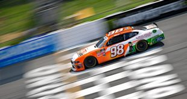

Chase Briscoe's future is still up in the air at this point, according to the man himself. The 24 year old Hoosier has spent 2019 driving the #98 car for Stewart-Haas Racing with Biagi-DenBeste, where he earned his second career win at Iowa Speedway, garnered 12 top 5's, and is currently dominating the rookie of the year battle. Briscoe is not a pay driver, so his future depends on Ford willing to continue sponsoring his efforts next season.